Записывайте связи за несколько нажатий. Имя и город корреспондента программа возьмёт с QRZ.ru или QRZ.com, расстояние посчитает сама, журнал выгрузит в ADIF или в отчёт для соревнований. Бесплатно, исходный код открыт.
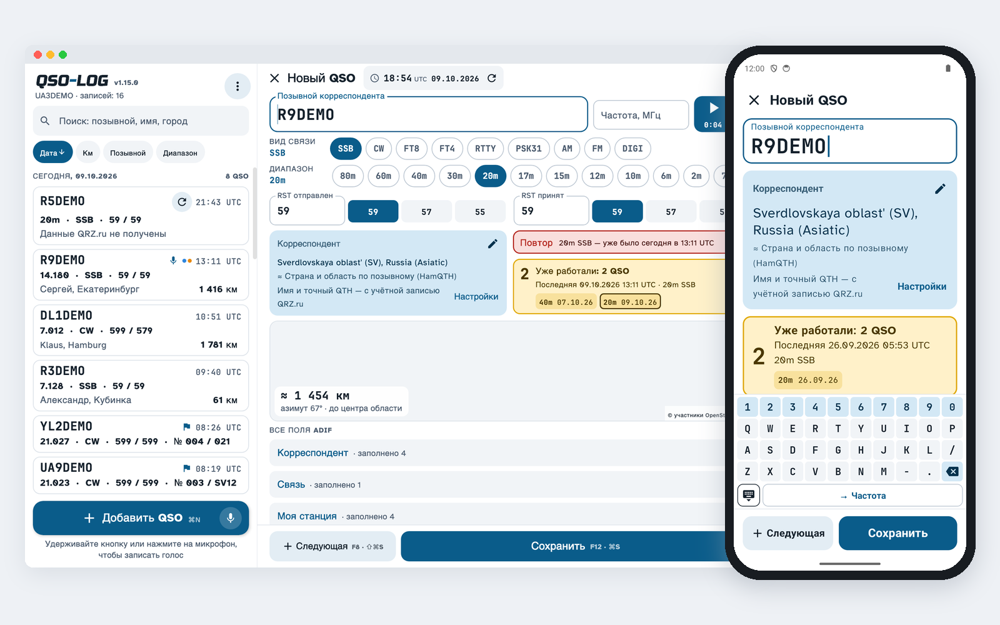
Позывной, частота, RST — и всё. Подсказки из журнала, предупреждение о повторе, частота в килогерцах, кнопка «Следующая» для пайлапа.
Имя, город и локатор приходят с QRZ.ru через XML API или по учётной записи сайта. Зарубежные позывные — с QRZ.com. Если везде пусто, страну и область подскажет HamQTH.
CONTEST MODE: позывной и контрольный код на своей крупной клавиатуре — и следующая связь. Номер растёт сам или передаётся постоянный код (MO69, EU), свайпом (на компьютере — PgUp) можно вернуться и исправить. Отчёт ЕРМАК или Cabrillo — в два нажатия.
Удержите «Добавить QSO» и говорите. Запись останется в карточке связи, её можно отправить в мессенджер.
Азимут, расстояние и трасса на карте. Отдельная карта показывает всех, с кем вы работали.
Статистика журнала в графиках: связи по дням, диапазоны, виды, страны, часы в эфире, расстояния. Период и фильтры — в одну строку.
Один журнал на телефоне и компьютере: связи собираются в вашей Google Таблице, обмен — по кнопке «Синхронизировать». Править связи можно и прямо в таблице.
Поиск по позывному, имени и городу. Сортировка по дате, расстоянию, позывному или диапазону.
ADIF, CSV, ЕРМАК и Cabrillo. По умолчанию выгружаются только новые связи, а в карточке остаётся отметка с датой.
Диапазоны РФ, план IARU, Морзе, Q-коды, калькуляторы кабелей, КСВ и антенн, страна по позывному. Работает без интернета.
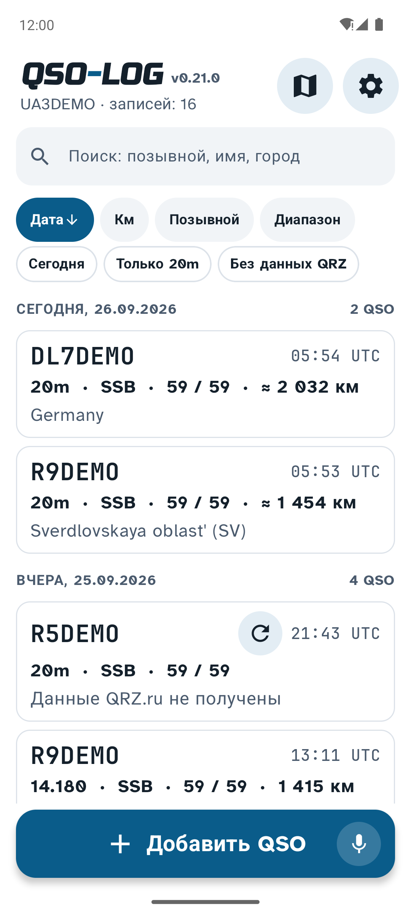
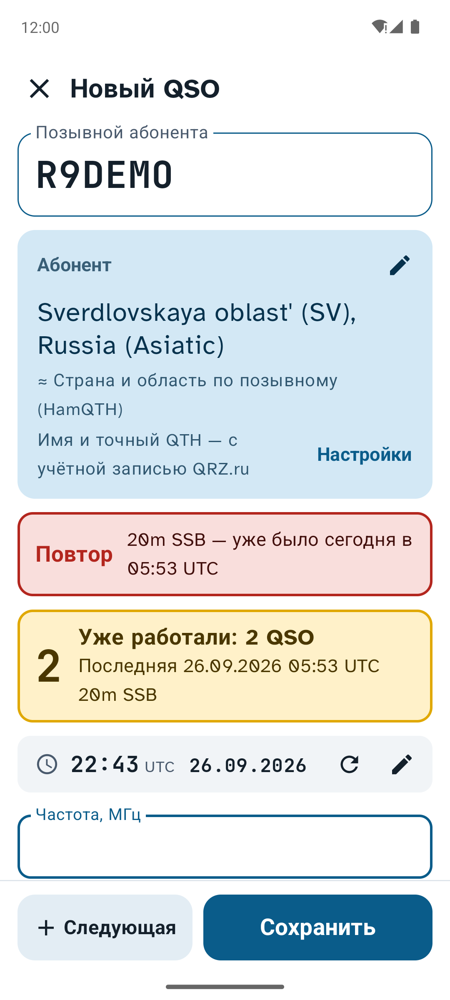
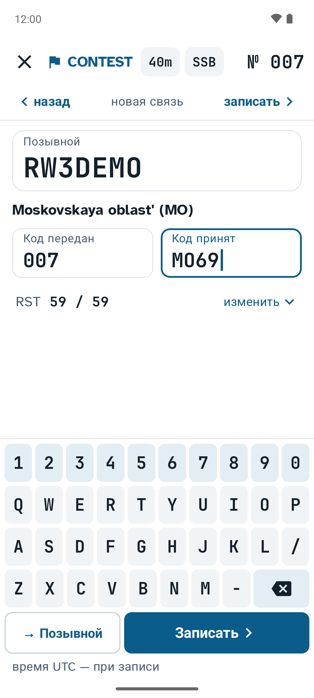
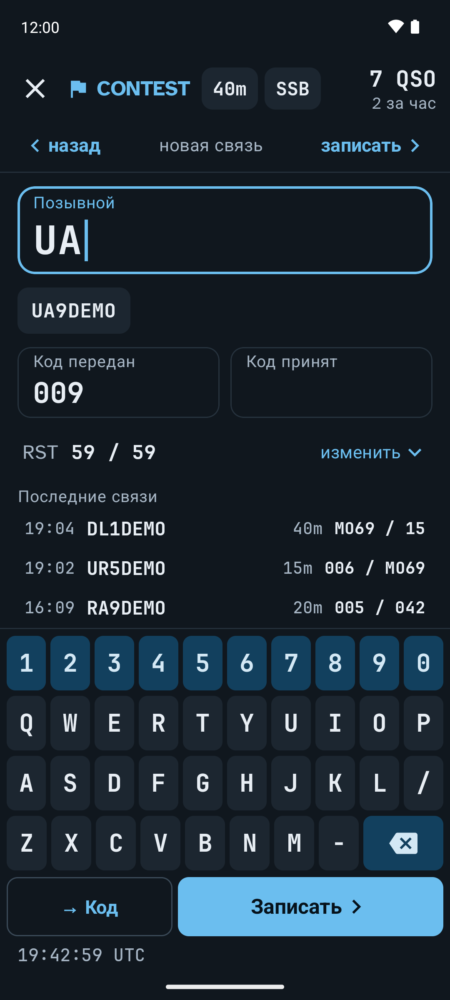
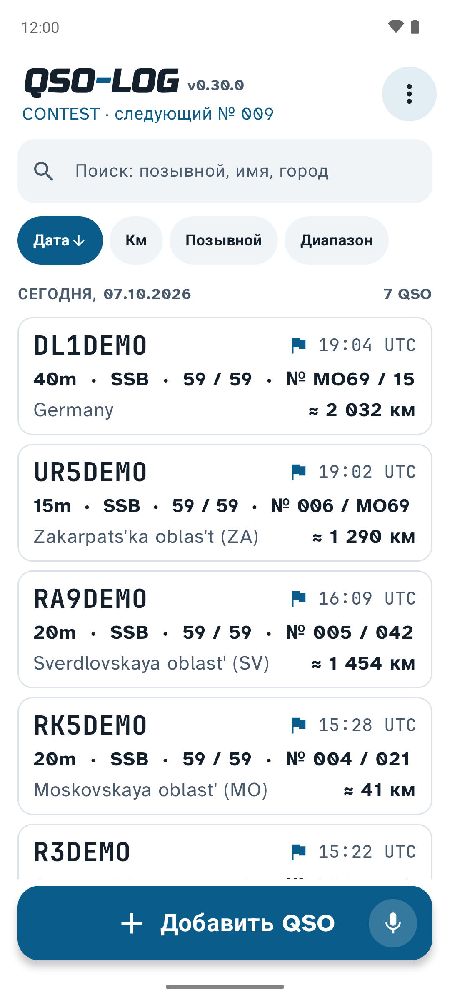
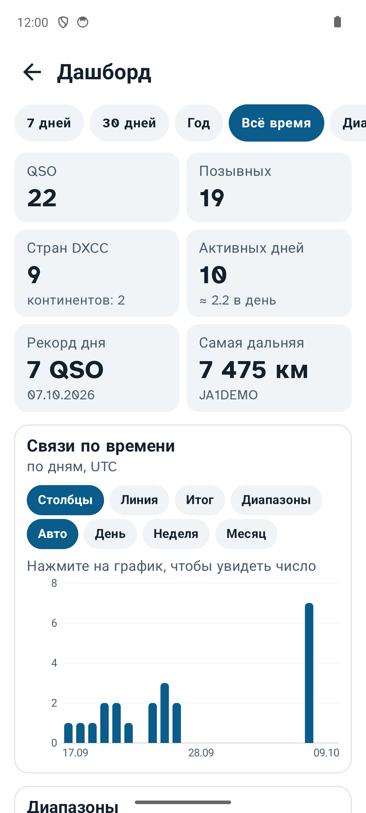
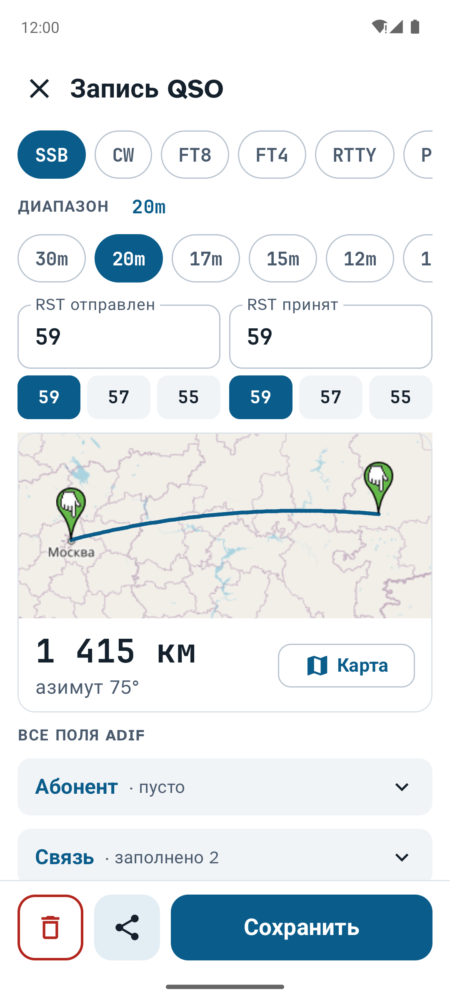
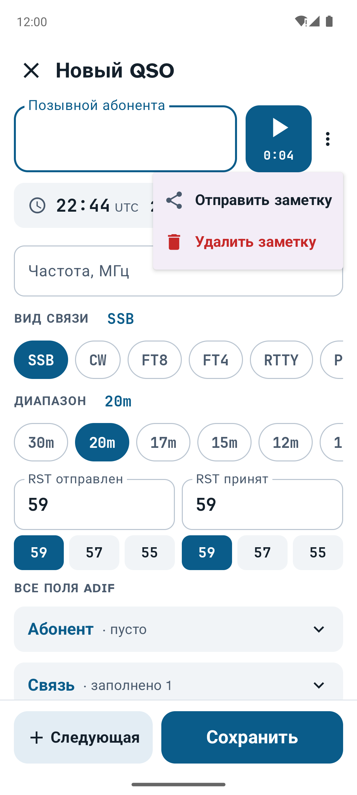
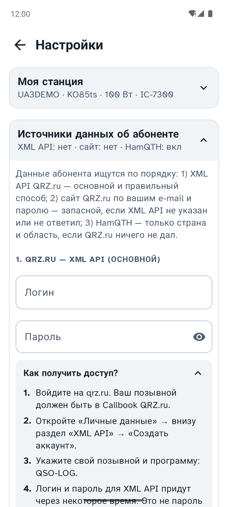
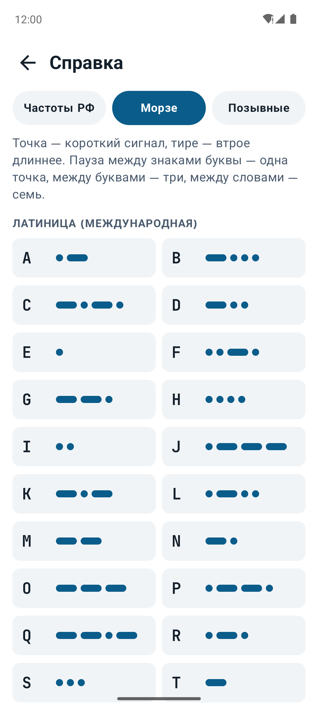
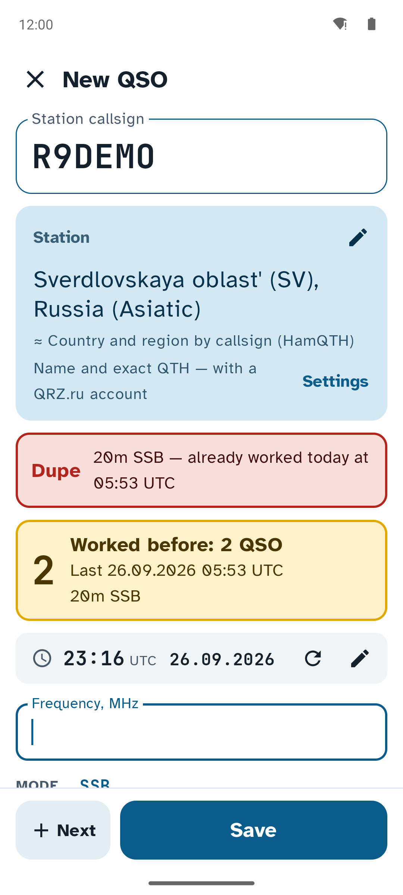
То же самое, что на телефоне, но в окне на две части и с клавиатуры: Enter переходит к следующему полю, Alt+1…9 выбирает диапазон.
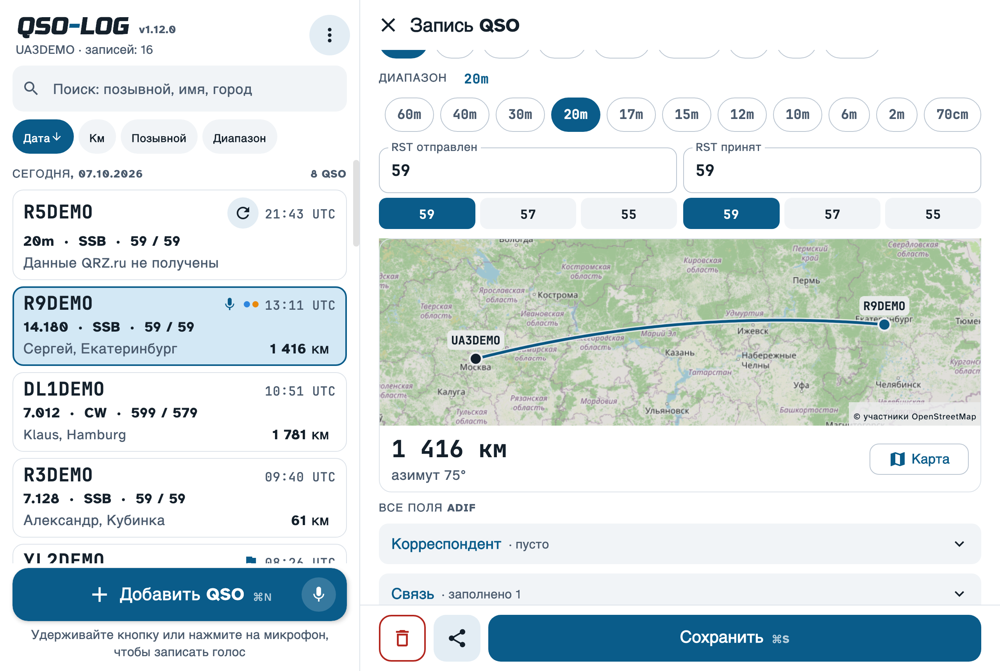